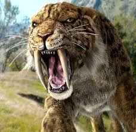

The Smilodon is one of the most famous prehistoric mammals. Often called the "Sabre-toothed Tiger," it was not actually a tiger but a distant cousin. Living during the Pleistocene epoch, it was built for power rather than speed, capable of taking down massive prey like bison and small mammoths.
Canine Teeth
Body Weight
Extinction